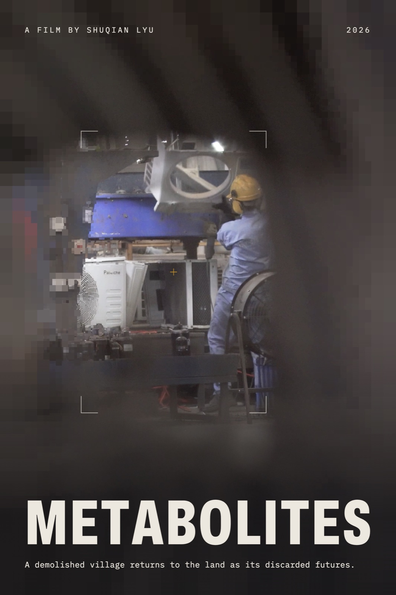

Metabolites

In the early 2000s, under a state-led urban renewal process in China, my ancestral village was demolished to make way for an industrial park, and the clan was relocated into urban residential complexes. Today, the land where we once lived processes electronic waste — waste embedded with rare earth metals and shattered screens, generated in part by the very people displaced to build the park. Their locations and relationships, once circulating as data inside the devices they discarded, now return to the ground that raised them.
This short film is part of my MFA thesis exhibition, Salvage Value. Its companion paper, On Displacement, Allotropy, and the Return of Waste, is listed under Research.